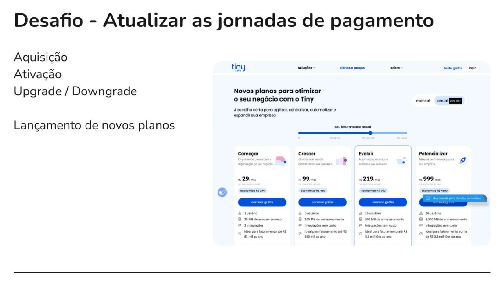
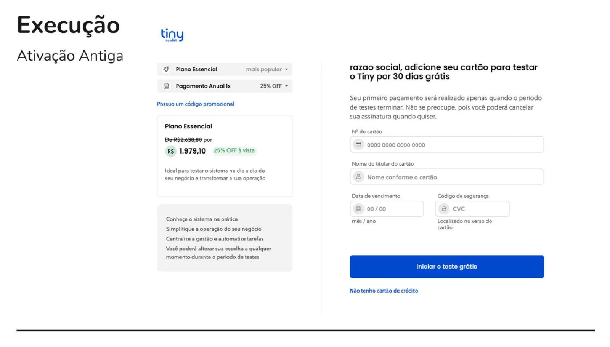
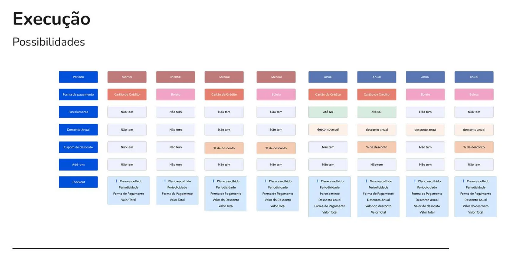
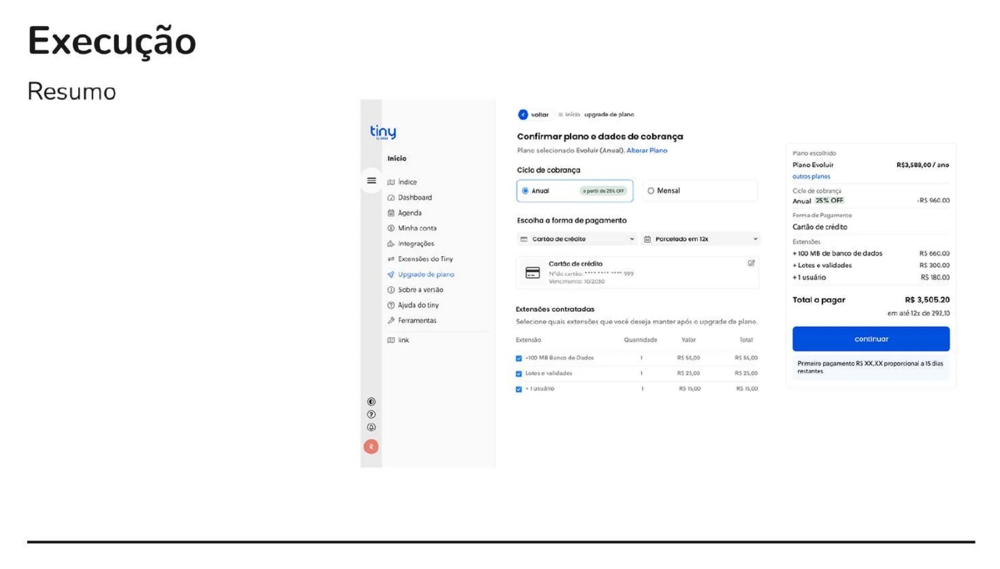
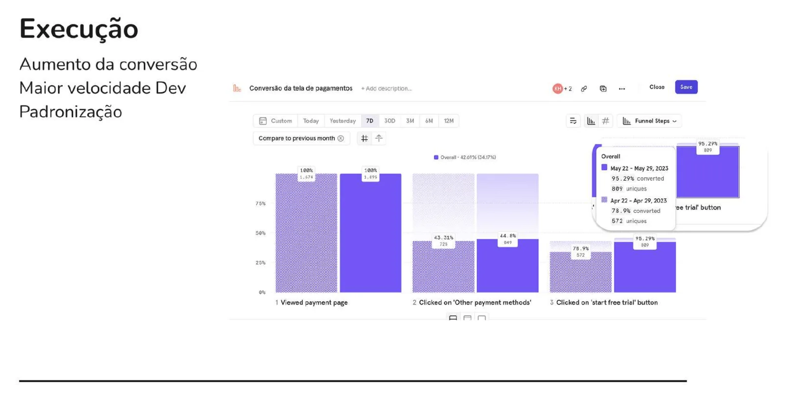
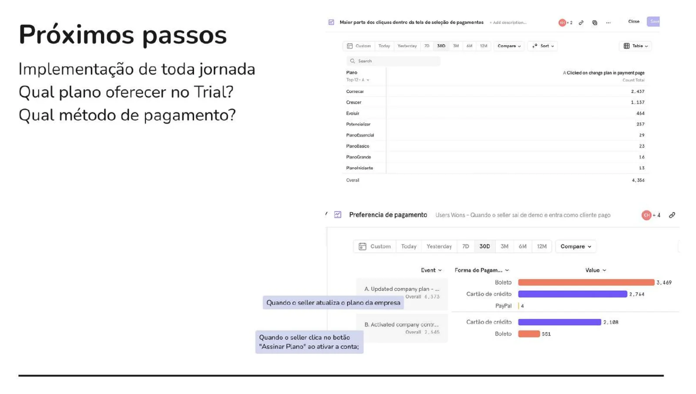

Olist + Tiny · SaaS para e-commerce · Ago 2021 – Jul 2023
Jornadas de pagamento do Tiny
Fui a primeira pessoa de design dedicada ao Tiny. Redesenhei as jornadas de aquisição, ativação, upgrade e downgrade dos planos, e a conversão para o teste grátis subiu de 78,9% para 95,3%.
95,3%
de conversão para o teste grátis, entre quem escolhia outra forma de pagamento
Antes: 78,9%
+16 p.p.
nessa etapa do funil, em um mês
+8,5 p.p.
no funil completo, da tela de pagamento ao teste grátis
De 34,2% para 42,7%
1.895
pessoas na tela de pagamento na semana medida
Contra 1.674 no mesmo período do mês anterior
Mixpanel, semana de 22 a 29 de maio de 2023 comparada com 22 a 29 de abril. É uma comparação antes e depois, não um teste A/B.
- Papel
- Primeira pessoa de design dedicada ao Tiny
- Escopo
- Aquisição, ativação, upgrade, downgrade e lançamento de novos planos
- Métodos
- Mixpanel, chamados de suporte e comercial, mapeamento de jornada
- Medição
- Mixpanel, abril contra maio de 2023
Contexto
Depois que a Olist comprou o Tiny, o investimento em marketing cresceu e a base de usuários também. A jornada de pagamento, porém, ainda era a do produto antigo e não acompanhava os novos planos.
O desafio era atualizar de uma vez a aquisição, a ativação, o upgrade e o downgrade, e ainda preparar o lançamento de novos planos.

Por que mexer
Dois sinais apontavam para o mesmo lugar:
- No Mixpanel, a tela de opt-out tinha uma taxa de desistência alta.
- O suporte e o comercial recebiam muitos chamados com dúvidas sobre preço.
Ou seja, as pessoas queriam testar o produto, mas a tela de pagamento criava dúvida no momento errado.

Mapear antes de desenhar
Mapeei a jornada inteira de pagamento e cruzei todas as combinações de plano, ciclo de cobrança e forma de pagamento. A matriz virou a base para desenhar cada estado da tela.

A solução
A nova tela deixa claro o plano, o ciclo, o valor e o que vai ser cobrado e quando. O resumo do pedido virou um componente reutilizável, usado em toda a jornada.
Isso também acelerou o desenvolvimento: o time passou a montar novos fluxos de plano com peças que já existiam.

Resultado
Entre quem escolhia outra forma de pagamento, a conversão para o teste grátis foi de 78,9% para 95,3%. No funil completo, da tela de pagamento ao teste grátis, foi de 34,2% para 42,7%.
Leitura honesta: é uma comparação de uma semana contra a mesma semana do mês anterior, não um teste A/B. Sazonalidade e campanhas de marketing podem ter influenciado parte do ganho.
Próximos passos
- Levar o novo padrão para toda a jornada de planos.
- Descobrir qual plano oferecer no teste grátis.
- Entender qual forma de pagamento oferecer primeiro, usando os dados de preferência entre boleto e cartão.

Contato
Gostou do que viu? Vamos conversar.